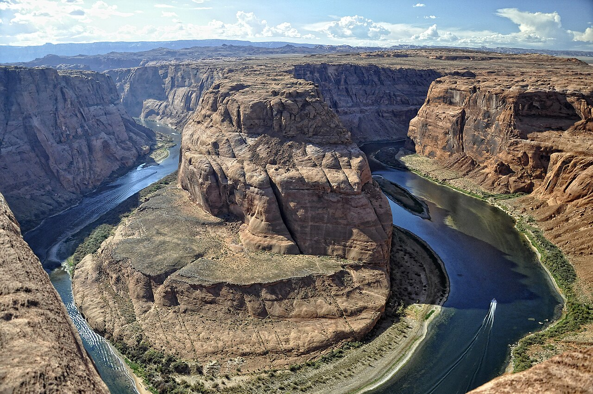

犹他州实行夏令时，亚利桑那州不实行。进入亚利桑那后时间倒退 1 小时。今天 16:00 前按犹他时间，抵达佩吉后按亚利桑那时间。佩吉日落约 17:50。
当日深度分时段行程与图文百科
锡安国家公园 (Zion) 观光巴士 ➔ 沿河平坦步道 (Riverside Walk)
🚗 早出发抢车位：在圣乔治凯悦享用热早餐后 07:30 退房出发，约 1 小时抵达锡安国家公园南门游客中心停车场（持国家公园年票免费入内）。10 月是锡安旺季，游客中心停车场上午就会停满。
🅿️ 停车备选：若游客中心停车场已满，可停在南门外 斯普林代尔/Springdale 小镇的付费停车场，搭乘小镇免费接驳车进园。
🚌 观光巴士 (Park Shuttle)：在游客中心换乘园内免费观光巴士，坐在靠窗座位上仰望两侧红白砂岩绝壁，体能消耗为零。
🌿 沿河步道慢步 (Riverside Walk)：在巴士终点站 西纳瓦瓦神庙/Temple of Sinawava 下车。这是一条沿维琴河修建的铺装平道，单程约 1.8 公里，走到哪里都可以随时折返，两侧绿树成荫，清凉舒适。
公园百科：维琴河如何雕刻出锡安绝壁？ (点击展开)
🌊 滴水穿石：大峡谷是“站在高处俯瞰深渊”，锡安则是“站在峡谷底仰望红岩巨塔”。维琴河 (Virgin River) 每年携带大量泥沙与卵石，历经千万年将纳瓦霍砂岩切开，形成深达 600~900 米的峡谷。
♿ 舒适服务：观光巴士配有无障碍踏板与靠窗座位；沿河步道沿途有石质休息长椅和林荫。
斯普林代尔午餐 ➔ 锡安–卡梅尔山公路 (Zion–Mount Carmel Highway) 东门出园
🍽️ 午餐 (12:00 - 13:00)：在南门外的 斯普林代尔/Springdale 小镇轻松用餐。
🛣️ 景观公路出园 (13:00 - 14:00)：沿 9 号公路/UT-9 向东驶出锡安。沿途是之字形盘山路、1.8 公里的历史隧道 (Zion–Mount Carmel Tunnel)，出隧道后是层层纹理的 棋盘台地/Checkerboard Mesa，路边有停车点可短暂停靠拍照，全程车窗观景（包含在国家公园年票内）。
地标百科：锡安–卡梅尔山隧道 (点击展开)
🚇 1930 年通车：隧道在砂岩山体中开凿而成，洞壁上开有几扇“窗口”可瞥见峡谷。普通轿车与 SUV 可直接通行，只有大型房车需要交通管制。
经卡纳布 (Kanab) 驶往佩吉 (Page)
🚗 转场：出东门后经 卡梅尔山交汇口/Mount Carmel Junction 转 89 号公路/US-89 南下，在 卡纳布/Kanab 小镇停靠加油、使用洗手间，稍作歇脚后继续驶往佩吉。卡纳布到佩吉之间补给点很少，务必在卡纳布加满油。
⏰ 时区切换：进入亚利桑那州后手机时间会自动倒退 1 小时，抵达佩吉时约为亚利桑那时间 15:00。
马蹄湾 (Horseshoe Bend) 观景台

🌀 午后光线最好：下午时段河湾内的科罗拉多河能照到阳光，颜色最清楚，也避开了日落前的人流高峰。
🚶 步道情况：往返约 2.4 公里，压实沙土路面，基本平坦，只有一段缓坡（回程是上坡），连同观景全程约 30~45 分钟。左侧岔路是加宽的无障碍步道，终点为带护栏的观景平台。
🧢 准备：步道沿途无遮阴，请带好饮用水、帽子和墨镜；停车场有洗手间和遮阳凉亭座椅。
🅿️ 停车费：$10/车，现场刷卡或现金均可。停车场由佩吉市管理，国家公园年票不适用。
🌅 天黑前返回：当天日落约 17:50，请在天黑前走回停车场。
地质百科：科罗拉多河的马蹄形大转弯 (点击展开)
🌊 嵌入式河曲：科罗拉多河在这里绕着一座砂岩孤丘转了一个接近 270 度的弯。观景台距离河面约 300 米，河水是下游格伦峡谷大坝放出的清水，所以呈现出绿色。
入住佩吉凯悦嘉轩酒店 ➔ 晚餐 ➔ 休息
🏨 入住：从马蹄湾开 10 分钟入住 佩吉凯悦嘉轩酒店 (Hyatt Place Page / Lake Powell)，包含全家热早餐与免费停车。
🍽️ 晚餐：在佩吉镇上轻松用餐。明天 08:30 出发，比今天宽松，可以好好休息。